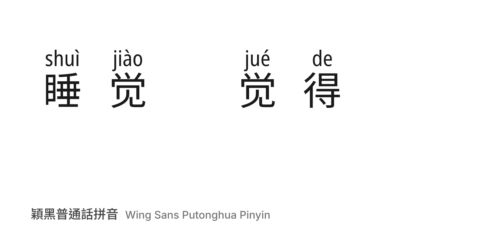

Wing Sans Putonghua Pinyin prints the reading of every Chinese character — Standard Mandarin (Putonghua) in Hanyu Pinyin — right above it, so learners can read text aloud without looking anything up. The reading is part of the glyph, so no extra typesetting or annotation tools are needed: it works in applications with OpenType support, such as Microsoft Word, Canva, Affinity and modern web browsers.

Many characters have more than one reading. The font picks the right one from the surrounding word through OpenType contextual alternates: 觉 is jiào in 睡觉 (to sleep) but jué in 觉得 (to feel). When the automatic choice is wrong, typing a digit after the character selects another reading.
Wing Sans is made for students, teachers and self-learners who can read Chinese but are unsure how to say it, and for anyone preparing handouts, slides or signage that should be read aloud.
Built with Wing Font from Noto Sans SC (characters) and Noto Sans (annotations). Reading data: pinyin-data and phrase-pinyin-data (MIT, from Unicode Unihan); see data attribution.
To contribute, see github.com/Wing-Font/wing-sans-chinese.